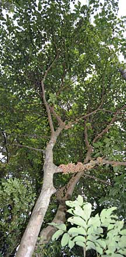
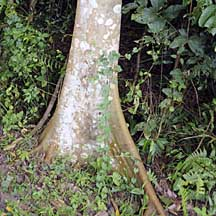
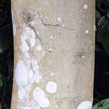
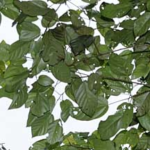
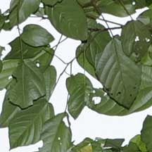
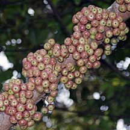
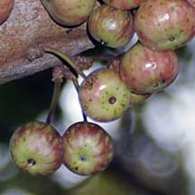

|
|
|
plants
text index | photo
index
|
| Figs in general |
| Common
red stem-fig Ficus variegata Family Moraceae updated Nov 10 Where seen? This large tree can be seen on Pulau Ubin. According to Hsuan Keng, it was common in open forests and forest edges. According to Corners, it was common also in towns and villages in Malaya. It was previously known as Ficus polysyce. Features: The tree is not a strangler. It can grow very tall (up to 30m). Leaves thin, heart-shaped with pointed tips (10-25cm) with long stems and obvious veins. In saplings, the leaves have a toothed edge. The trees drop their leaves after the regular dry season, usually twice a year. Generally, only trees taller than 5m bear figs. The figs appear in dense clusters on the trunk and main branches. According to Corners, when the tree is "plastered" with figs, "a more prolific organism cannot be imagined and it may well be taken as an emblem of tropical luxuriance". The figs are round (2-5cm) on long stalks, green ripening rose red with pale streaks. The bark is smooth, pale pinkish brown with stumpy black twigs from which the figs emerge. It has spreading buttress roots. Role in the habitat: A figging Jejawi attracts a whole range of creatures from fruit eating birds of all kinds to squirrels and long-tailed macaques. Human uses: According to Burkill, the fibrous bark is used by jungle natives to make a felt-like cloth used for loin cloths. The sweet bark is chewed or the fruits used instead, to cure dysentery.In the past the latex was used in the batik industry. The fruits are apparently only eaten in times of famine and Burkill said that "no European could stomach them". |
 Pulau Ubin, Dec 09 |
|
 Pulau Ubin, Dec 09  |
 Pulau Ubin, Dec 09  |
 Pulau Ubin, Dec 09  |
|
Links
References
|